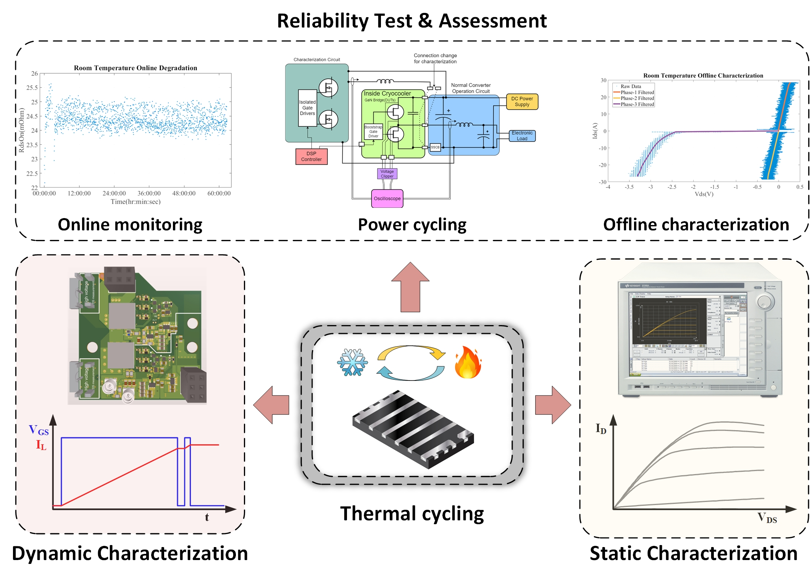

Welcome to
Characterization and application of cryogenic power semiconductor/Electronics

Details
- Static characterization: Automating forward conduction, reverse conduction and leakage test for multiple devices.
- Dynamic characterization: Automating double-pulse test for dynamic Ron test with programmable stressors
- Reliability test: Automating thermal cycling with on-board characterization and online monitoring
- Application: Targeting the cold electronics behavior in power application, such as lunar mission, quantum computing and ship degaussing
Publications
S. Dam, C.H. Yang, Z. Dong, D. Qin, R. Chen, F. Wang, H. Bai, Z. Zhang, “Module development for a high specific power density high-efficiency cryogenic solid-state circuit breaker for electrified aircraft propulsion,” in IEEE Transactions on Power Electronics, vol. 39, no. 10, pp. 13234-13247, Oct. 2024.
Link, Paper
T. Qiu, Z. Zhang, P. Khadka, A. Siraj, and D. Rana, “Automated characterization platform for comprehensive dynamic Rdson assessment of GaN HMETs from 50 K to 400 K,” Proc. IEEE Applied Power Electronics Conference and Exposition, March 2025.
Link, Paper
P. Khadka, S. Shivdilar, Z. Zhang, T. Qiu, A. Siraj, “Comparison of static characteristics in GaN HEMTs across 50 K to 400 K considering diverse techniques and statistical variation,” Proc. IEEE Applied Power Electronics Conference and Exposition, March 2025.
Link, Paper
T. Qiu, Z. Zhang, and P. Khadka, “Conduction lead design and optimization for cryogenic characterization of GaN HEMTs,” in Proc. IEEE Energy Conversion Congress and Exposition, Oct. 2024.
Link, Paper
P. Khadka, C. Wan, Z. Zhang, T. Qiu, and A. Siraj, “Automated static characterization platform for multi-GaN devices across cryogenic and high-temperatures,” in Proc. IEEE Energy Conversion Congress and Exposition, Oct. 2024.
Link, Paper
C.H. Yang, S.K. Dam, Z. Dong, D. Qin, R. Chen, F. Wang, H. Bai, and Z. Zhang, “Spring-loaded GaN packaging for cryogenic thermal cycling,” in Proc. IEEE Energy Conversion Congress and Exposition, Oct. 2024.
Link, Paper
C. H. Yang, S. K. Dam, Z. Dong, D. Qin, R. Chen, F. Wang, H. Bai, and Z. Zhang, “A high efficiency 750V, 100A cryogenically cooled SSCB module for aviation application,” in Proc. IEEE Energy Conversion Congress and Exposition, Oct.-Nov. 2023, pp. 1745-1751.
Link
S. K. Dam, C. H. Yang, Z. Dong, D. Qin, R. Chen, F. Wang, H. Bai, and Z. Zhang, “Module development of a high-power-density high-efficiency cryogenic solid state circuit breaker for electrified aircraft propulsion,” in Proc. IEEE Energy Conversion Congress and Exposition, Oct.-Nov. 2023, pp. 1996-2001.
Link, Paper
D. Zhou, C. H. Yang, S. K. Dam, D. Qin, R. Chen, F. Wang, H. Bai, and Z. Zhang, “High current turn-off of GaN HEMT for solid-state circuit breaker at cryogenic temperatures,” in Proc. IEEE Applied Power Electronics Conference and Exposition, March 2023, pp. 656-660.
Link, Paper
C. H. Yang, D. Zhou, S. K. Dam, D. Qin, R. Chen, F. Wang, H. Bai, and Z. Zhang, “Paralleling 650V/150A a GaN HEMTs for cryogenically cooled solid-state circuit breaker applications,” in Proc. IEEE Applied Power Electronics Conference and Exposition, March 2023, pp. 2520-2525.
Link, Paper
S. K. Dam, C. H. Yang, Z. Dong, D. Qin, R. Chen, F. Wang, H. Bai, and Z. Zhang, “Experimental evaluation of cryogenic performances of electronic components for signal isolation in medium voltage power converters,” in Proc. IEEE Applied Power Electronics Conference and Exposition, March 2023, pp. 3196-3200.
Link, Paper